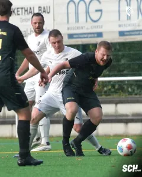
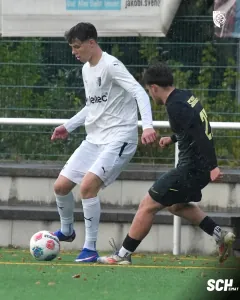
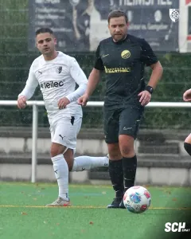
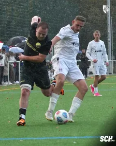
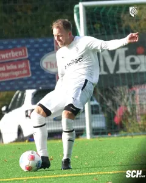
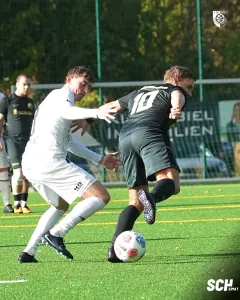
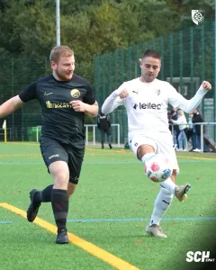
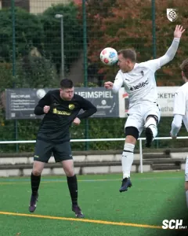
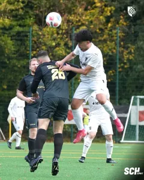
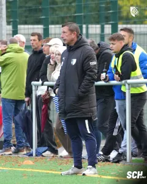

Vier Tore, drei Punkte: Papst-Elf meldet sich zurück
Nach zwei Niederlagen in Folge hat unsere zweite Mannschaft die passende Antwort auf dem Platz gegeben. Am siebten Spieltag der Kreisoberliga setzte sich der SCH gegen die SG SV 1887 Gernrode mit 4:0 (3:0) durch. Auf dem Kunstrasenplatz im Gesundbrunnenstadion sorgten die Blau-Weißen früh für klare Verhältnisse. Bereits nach 20 Minuten stand es 3:0. Colin Pingel und Wibe trafen jeweils doppelt und bescherten der Mannschaft von Trainer Daniel Papst vor 30 Zuschauern einen verdienten Heimerfolg.
Nach zwei Niederlagen wieder in der Erfolgsspur
Die vergangenen Wochen waren für unseren Kreisoberligisten nicht einfach. Nach der knappen 0:1-Heimniederlage gegen Schwarz-Rot Wingerode musste sich die Papst-Elf am vergangenen Wochenende auch bei der SG DJK SV Arenshausen geschlagen geben. Beim 0:3 hatte unsere Mannschaft die erste Halbzeit noch ohne Gegentor überstanden, ehe zwei schnelle Treffer nach dem Seitenwechsel die Partie zugunsten der Gastgeber entschieden. Drei Siege und drei Niederlagen standen damit vor dem Heimspiel gegen Gernrode zu Buche. Eine ausgeglichene Bilanz, die allerdings nicht darüber hinwegtäuschen konnte, dass unsere Zweite zuletzt zweimal ohne eigenen Treffer geblieben war. Mit Gernrode kam zudem ein Gegner in den Gesundbrunnen, der eine Woche zuvor gegen die zweite Mannschaft des FC Union Mühlhausen gewonnen hatte. Die Gäste reisten entsprechend mit einem Erfolgserlebnis an und wollten auch beim SCH etwas mitnehmen. Für unsere Blau-Weißen bot sich dagegen die Gelegenheit, vor heimischem Publikum wieder ein anderes Gesicht zu zeigen.
Pingel eröffnet einen Auftakt nach Maß
Viel Zeit brauchten die Gastgeber nicht, um die Begegnung in ihre Richtung zu lenken. Gerade einmal sechs Minuten waren gespielt, als Colin Pingel für die frühe Führung sorgte. Das 1:0 war nach zwei torlosen Ligaspielen ein wichtiger Treffer für unsere Mannschaft. Und die Papst-Elf legte unmittelbar nach. Nur fünf Minuten später war Roman Wibe zur Stelle und erhöhte in der 11. Minute auf 2:0. Zwei Tore innerhalb der ersten elf Minuten, besser hätte sich Trainer Daniel Papst den Start seiner Mannschaft kaum wünschen können. Für Gernrode entwickelte sich die Anfangsphase damit alles andere als erhofft. Die Gäste, die mit einem Sieg aus der Vorwoche angereist waren, mussten früh einem deutlichen Rückstand hinterherlaufen. Unser SCH hatte sich dagegen innerhalb kürzester Zeit eine komfortable Ausgangslage geschaffen.
Wibe schnürt den Doppelpack
Auch nach dem zweiten Treffer blieb die Torausbeute unserer Mannschaft beeindruckend. In der 20. Minute war erneut Roman Wibe erfolgreich. Mit seinem zweiten Tor des Nachmittags stellte er auf 3:0 und sorgte damit bereits früh für eine Vorentscheidung. Drei Treffer innerhalb von 14 Minuten machten den Unterschied in dieser Begegnung aus. Während unsere Zweite in den vergangenen beiden Ligaspielen vergeblich auf ein Erfolgserlebnis vor dem gegnerischen Tor gewartet hatte, funktionierte es diesmal gleich mehrfach. Für Wibe war es ein besonders erfolgreicher Nachmittag. Mit seinem Doppelpack hatte er entscheidenden Anteil daran, dass die Papst-Elf schon in der ersten Halbzeit auf die Siegerstraße einbog. Bis zum Pausenpfiff blieb es beim 3:0.
Pingel macht nach der Pause alles klar
Wer nach dem Seitenwechsel auf eine schnelle Antwort der Gäste gehofft hatte, sah stattdessen den nächsten Treffer unserer Blau-Weißen. Gerade einmal fünf Minuten waren im zweiten Durchgang gespielt, als Colin Pingel erneut erfolgreich war. Mit seinem Treffer in der 50. Minute erhöhte er auf 4:0 und machte damit endgültig deutlich, dass die drei Punkte an diesem Sonntag im Gesundbrunnen bleiben sollten. Wie schon Wibe vor der Pause durfte sich auch Pingel über seinen zweiten Treffer freuen. Beide Spieler hatten damit jeweils einen Doppelpack geschnürt und waren gemeinsam für sämtliche vier Tore unserer Mannschaft verantwortlich. So blieb es nach 90 Minuten beim deutlichen 4:0-Heimerfolg. Neben den vier eigenen Treffern konnte sich die Papst-Elf auch darüber freuen, erstmals nach zwei Niederlagen wieder ohne Gegentor geblieben zu sein.
Mit einem guten Gefühl in die kommenden Wochen
So wichtig der deutliche Erfolg gegen Gernrode auch ist, er bleibt zunächst eine Momentaufnahme. Die vergangenen Wochen haben gezeigt, wie eng Erfolg und Enttäuschung in der Kreisoberliga beieinanderliegen können.
Umso schöner ist es, dass unsere Zweite nach zwei schwierigen Spieltagen wieder einen Sieg feiern konnte. Besonders die vier Treffer und das erste Zu-null-Spiel nach den beiden Niederlagen liefern Gründe für Zufriedenheit.
Am kommenden Sonntag, dem 18. Oktober, geht es für die Papst-Elf auswärts bei der zweiten Mannschaft des SC Leinefelde 1912 weiter. Dort bietet sich die Gelegenheit, an den erfolgreichen Heimauftritt anzuknüpfen.
Zunächst aber darf sich unsere Mannschaft über einen gelungenen Fußballnachmittag freuen. Ein 4:0, das nach den vergangenen beiden Wochen richtig guttut und unserer Zweiten drei wichtige Punkte beschert.
Spieldaten
1. SC 1911 Heiligenstadt II – SG SV 1887 Gernrode 4:0 (3:0)
SC Heiligenstadt
Lerch – Kaufhold – Wibe (73. Neuschl) – Weilandt – Semper – Weidemann – Jargees Ali (80. Aschoff) – Schäfer – Kahlmeyer (87. Rasho) – Pingel (72. Rohner) – Hanusch
SG SV 1887 Gernrode
Orlob – Lehmann (58. Wagner) – Barthel – J. Werner – Trappe (82. Otto) – N. Werner (58. Kepes) – Pohlmann (58. Kallmeyer) – Doubek – Begau – Trümper (46. Kaltenhäuser) – Wegerich
Schiedsrichter
Kaufung
Zuschauer
30
Tore
1:0 Pingel (6.), 2:0 Wibe (11.), 3:0 Wibe (20.), 4:0 Pingel (50.)










Quelle: www.sc1911-heiligenstadt.de · Stand 22.10.2026